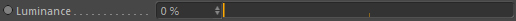
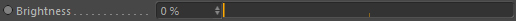

Compositing
Luminance

The luminance multiplier for the output color.
Mapping (transparency)
Controls and optionally colors the luminance based on the transparency (alpha) of the current pixel.
The left side of the gradient represents the luminance at full transparency and the right side the luminance at full opacity.
Brightness

Brightness of the final output.
Contrast

Contrast of the final output.
Saturation
Saturation of the final output.